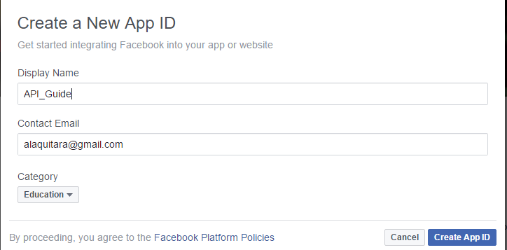

The  API how to guide
API how to guide
Created by Alexander Laquitara for OSU CS 290 Web Development.
Getting Started
To start off, lets get setup with the Facebook API.
You can register to use the API here, simply click the register button on the top right of the page and follow the instructions. If you have a facebook account this is a faily intuitive process.
Once you have registered, it will ask you to create a new app ID. Simply fill in the appropriate boxes

As you can see from above, I decided to call my app API_Guide, I entered a personal email and the category is education by definition. Once the information is entered click Create App ID.
Your APP ID:
Now that we have registered it is important that we know how to find our APP ID.
You can click here to go back to the homepage now that you have registered for an account. On the top right of the page you will see a drop down menu called "My Apps" along side your facebook profile picture. Click on the new app you created which will take you to the app Dashboard. At the top of the dashboard you will see APP ID: and some numbers
This key or app ID is specific to your app and will be used later when we start to incorporate the API into our code.
Setup the Facebook SDK for JavaScript
Whenever you wish to incorporate the facbook API, the following snippet of code will automatically load the basic default version for the SDK for Javascript.
It should be inserted directly after the opening body tag for each page.
Thats it! We are all setup now to explore the facebook API further. Click the next button below to continue the tutorial.